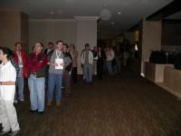

SCALE Registration - Then and Now

See the difference in the photos? The first is from SCALE 5X, and was the typical Saturday morning registration crush we'd had every year since the inception of the SoCal Linux Expo. It was a walk-up process, with registration by a SCALE volunteer and involved waiting around for a few minutes until your badge was printed.
The second photo is from SCALE 6X, after the implementation of "SCALEReg", an automated registration system. Originally written by SCALE's Lei Zhang, it was released under the GPL and is available at Google's code-hosting site.
At SCALE, installing SCALEReg on six walk-up kiosks allows self-registration, and typically an attendee's badge is available within a minute or two of them walking up to Registration. SCALEReg has allowed streamlined registration, reduced registration errors, and eliminated a lot of frustration among SCALE attendees.
Since its release, SCALEReg has been used by the Utah Open Source Conference and is being used by the Texas Linux Fest.
SCALEReg shows the power of Open Source Software!